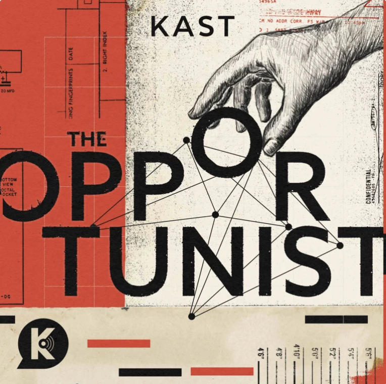

Normal Gossip | By: Defector
"Normal Gossip delivers juicy, strange, funny and utterly banal gossip about people you'll never know and never meet."
Favorite Episodes
- Vigilante Renovation
- In Defense of Children
- You Can't Fight with Heiress Tongue
The Huberman Lab | By: Huberman Lab
Neuroscientist and professor at Standford School of Medicine Andrew Huberman discusses brain development, function and neuroplasticity.
Favorite Episodes
- Sleep Toolkit: Tools for Optimizing Sleep & Sleep-Wake Timing
- Using Play to Rewire & Improve Your Brain
- Leveraging Dopamine
The Opportunist | By: Kast Media
"The Opportunist tells true stories of regular people who turn sinister simply by being opportunistic."

Favorite Episodes
- David Ghantt: A Capital M
- Sherry Shriner: Internet Prophet
- Sheryl Ruthven: A New Mary Magdalene